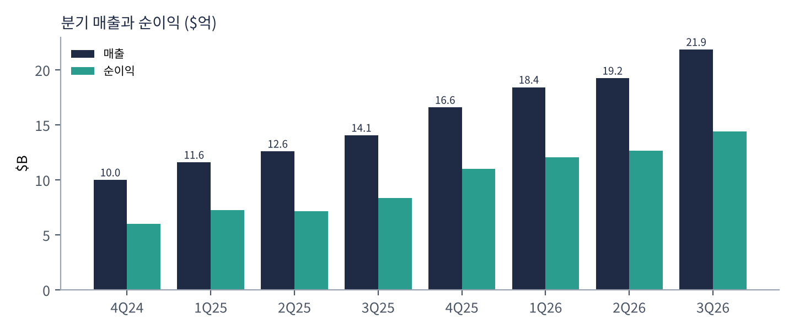
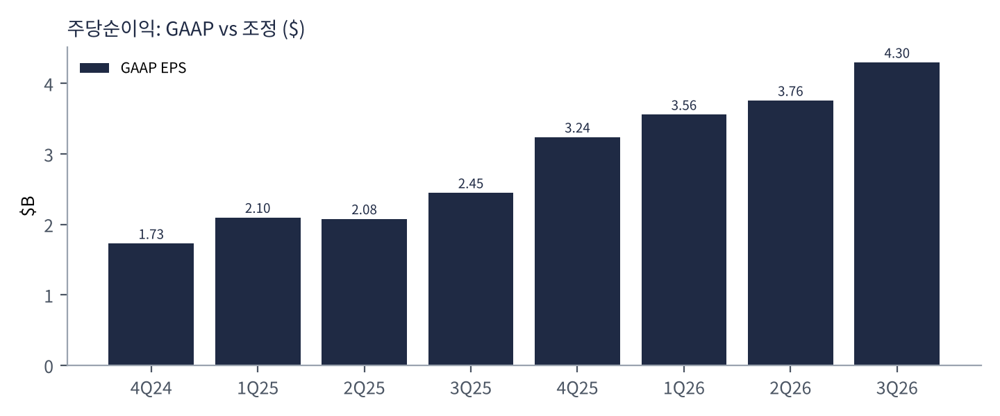
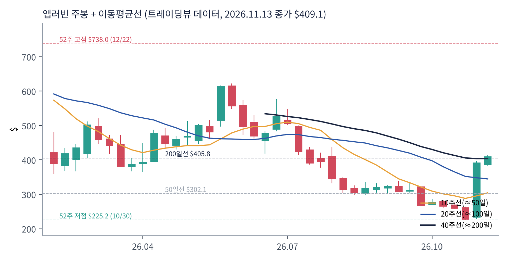
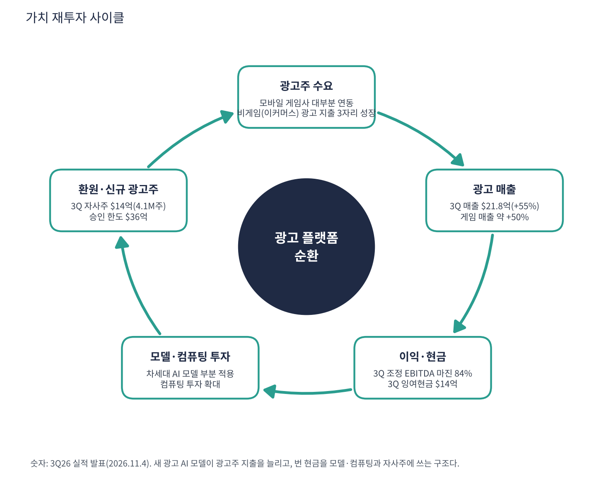

앱러빈은 AI 광고 엔진(AXON)으로 모바일 앱·게임 광고주와 매체를 연결해 광고 수수료를 버는 회사다. 매출이 +55% 늘고 순이익률이 66%지만, 광고 모델 변화와 게임 의존이 위험인 회사다.
| 항목 | 내용 |
|---|---|
| 종목 | AppLovin (APP) · NASDAQ · 광고 플랫폼 · 캘리포니아 팰로앨토 |
| 멀티플 | PER 27.5배(TTM) · P/S 17.32배 (11/13 종가 $409.10) |
| 최근 분기(3Q26) | 매출 $21.8억(+55%), 순이익 $14.4억(+72%), EPS $4.30, 조정 EBITDA $18.4억(84%) |
| 가이던스(4Q26) | 매출 $23.65~23.95억, 조정 EBITDA $19.95~20.25억 |
| 현금·부채 | 스캐너: 현금 $31.7억, 총차입금 $35.2억, TTM 잉여현금 $49.0억 |
| 직책 | 인물 | 역할·특징 |
|---|---|---|
| CEO | 애덤 포루지 | '모델 개선과 모든 모바일 게임사 연동'이 3Q 가속의 원인이라고 설명 |
| CFO | 맷 스텀프 | 잉여현금 전환·가이던스 설명, 자사주 $14억 집행 |
경영 스타일: '모델 성능을 올려 광고주 수익률을 유지하며 지출을 늘린다'. 새 모델을 부분 적용한 상태에서 3Q 매출이 가이던스 상단을 약 $1억 상회했고, 전체 적용 시점은 제시하지 않았다.
더 복잡한 모델 구조를 부분 적용, 컴퓨팅 투자를 늘리는 중.
소비자(이커머스) 광고주 지출이 분기 두 자릿수, 전년 대비 3자리 성장 중이다.
다음 실적발표(4Q26)는 세 가지 질문에 답하는 자리다.
질문 1. 매출이 가이던스($23.65~23.95억)를 넘는가?
| 확인할 숫자 | 좋아지면 | 나빠지면 |
|---|---|---|
| 4Q 매출 $23.65~23.95억(+43~44%), 조정 EBITDA $19.95~20.25억(84~85%) | 가이던스 이상이면 ②광고 매출 고리가 유지된다 | 미달이면 모델 효과가 일시적이었다는 신호다 |
질문 2. 비게임(이커머스) 광고가 크기를 키우는가?
| 확인할 숫자 | 좋아지면 | 나빠지면 |
|---|---|---|
| 소비자 광고 지출 분기 +두 자릿수, 전년 대비 3자리 성장(금액 미공개) | 비중이 커지면 ①광고주 수요 고리의 다변화가 확인된다 | 정체이면 게임 의존이 커진다 |
질문 3. 현금 전환과 자사주가 유지되는가?
| 확인할 숫자 | 좋아지면 | 나빠지면 |
|---|---|---|
| 3Q 잉여현금 $14억(조정 EBITDA의 77%), 순매출채권 $23.9억(연말 $18.2억) | 전환율 유지면 ③이익·현금 고리가 견고하다 | 매출채권만 늘면 현금 회수 속도가 약해진다 |
한 줄 판정 규칙: 첫 질문이 가이던스 이상이면 약한 고리(게임 의존)가 풀리고, 매출채권이 현금보다 빨리 늘면 이익의 질에 의문이 생긴다.
일정: 2027-02-17 예정(트레이딩뷰 일정, 회사 확정 확인 필요).
| 분기 | 매출 | 순이익 | EPS | 조정 EPS | 특이 사항 |
|---|---|---|---|---|---|
| 4Q24 | $10.0억 | $6.0억 | 1.73 | – | |
| 1Q25 | $11.6억 | $7.2억 | 2.10 | – | |
| 2Q25 | $12.6억 | $7.1억 | 2.08 | – | |
| 3Q25 | $14.1억 | $8.3억 | 2.45 | – | |
| 4Q25 | $16.6억 | $11.0억 | 3.24 | – | |
| 1Q26 | $18.4억 | $12.1억 | 3.56 | – | |
| 2Q26 | $19.2억 | $12.7억 | 3.76 | – | |
| 3Q26 | $21.9억 | $14.4억 | 4.30 | – | 3Q 매출 +55%, 순이익률 66%, EPS $4.30 |


값은 트레이딩뷰 스캐너 분기 이력(계속사업 기준)이다. 앱러빈은 분기 비GAAP EPS를 발표하지 않아 조정 EPS 열은 '–'다(조정 EBITDA만 발표). 분기 설비투자는 구하지 못했다.
흐름 요약: 매출이 4Q24 $9.99억에서 3Q26 $21.8억으로 늘었고 EPS는 $1.73에서 $4.30으로 올랐다. 순이익률이 약 66%다.
| 항목 | 값 | 비고 |
|---|---|---|
| 3Q 매출 | $21.8억(+55%) | 전분기 대비 +14% |
| 게임 매출 | 약 +50%(YoY) | 차세대 모델 적용과 함께 재가속(회사) |
| 소비자 광고 | 분기 +두 자릿수, YoY 3자리 | 금액 미공개 |
| 9개월 매출 | $59.5억(+56%) | 회사 |
앱러빈은 매출을 사업별로 나누어 공개하지 않는다. 게임이 중심이고 소비자 광고가 빠르게 크는 중이다.
앱러빈은 'AI 광고 엔진으로 광고주 수익률을 키우고 게임 밖 광고로 시장을 넓히는 것'을 목표로 한다.
| 축 | 최근 움직임 |
|---|---|
| 모델 | 차세대 AI 모델 확대 적용 |
| 광고주 | 게임사 대부분 연동, 이커머스 확대 |
| 환원 | 승인 한도 $36억(+$32억 증액) |

| 이동평균 | 값 | 종가 대비 | 해석 |
|---|---|---|---|
| 5일선 | $402.61 | +1.6% | 현재가가 위 |
| 20일선 | $305.37 | +34.0% | 현재가가 위 |
| 50일선 | $302.13 | +35.4% | 현재가가 위 |
| 100일선 | $349.11 | +17.2% | 현재가가 위 |
| 200일선 | $405.79 | +0.8% | 현재가가 위 (+1%) |
주봉 흐름: 52주 고점 $738.01(12/22), 52주 저점 $225.19(10/30). 현재가 $409.10는 200일선 $405.79보다 위, 50일선 $302.13보다 위에 있다.
| 규칙 | 기준 | 현재 값 | 신호 |
|---|---|---|---|
| 장기 추세 필터 | 종가 vs 200일선 | $409.10 > $405.79 | 매수 |
| 중장기 교차 | 50일선 vs 200일선 | $302.13 < $405.79 | 매도 |
| 단기 교차 | 20일선 vs 50일선 | $305.37 > $302.13 | 매수 |
| 돈키언 채널 | 55일 고가 $413.88 / 저가 $225.19 | 중간값 $319.53 위 | 매수 |
| 1개월 모멘텀 | 21거래일 수익률 | +46.5% (기준 $279.29) | 매수 |
| 3개월 모멘텀 | 63거래일 수익률 | +31.1% (기준 $311.98) | 매수 |
| 6개월 모멘텀 | 126거래일 수익률 | -18.3% (기준 $501.00) | 매도 |
| 12개월 모멘텀 | 252거래일 수익률 | -30.1% (기준 $584.86) | 매도 |
| 종합 (8개 평균) | +0.25 | 매수 우위 |
해석: 8개 신호 중 매수 5개, 매도 3개(점수 +0.25, 매수 우위)다. 14일 ATR $26.21 (6.4%).
| 가격·조건 | 무엇이 바뀌나 | 의미 |
|---|---|---|
| 50일선이 200일선 위로 | 50/200 교차 | 매도 → 매수 |
| $501.00 돌파 | 6개월 기준가 | 매도 → 매수 |
| $584.86 돌파 | 12개월 기준가 | 매도 → 매수 |
| $405.79 돌파 | 200일선 | 이탈하면 매수 → 매도 |
| 20일선이 50일선 위로 | 20/50 교차 | 이탈하면 매수 → 매도 |
| $319.53 돌파 | 돈키언 중간값 | 이탈하면 매수 → 매도 |
| 구분 | 가격대 | 근거 |
|---|---|---|
| 저항 1 | $413.88 | 55일 고점 |
| 저항 2 | $738.01 | 52주 고점 |
| 지지 1 | $405.79 | 200일선 |
| 지지 2 | $402.61 | 5일선 |
점수는 +0.25(매수 우위)다. 14일 ATR은 $26.21로 현재가의 6.4%다. 가까운 저항 $413.88을 종가로 넘는지와 가까운 지지 $405.79를 지키는지가 신호 전환의 기준이다. (내 가정, 매매 권유 아님)
| 악재 요인 | 내용 | 강도 |
|---|---|---|
| 성장 둔화 | 4Q 매출 증가율 가이던스 +43~44%(3Q +55%) | 중간 |
| 매출채권 | 순매출채권 $23.9억(연말 $18.2억) | 중간 |
| 주가 변동성 | 올해 S&P 500 최악 성과 종목이라는 보도(11/4, 인용) | 중간 |
| 게임 의존 | 모바일 게임이 매출 중심 | 중간 |
| 티커 | 회사 | PER(TTM) | PEG | P/S | EPS 성장(YoY) |
|---|---|---|---|---|---|
| APP | 앱러빈 | 27.5배 | 0.30 | 17.32배 | +87% |
| TTD | 더트레이드데스크 | 22.8배 | – | 2.44배 | -21% |
| PINS | 핀터레스트 | 77.4배 | – | 2.38배 | -91% |
| MGNI | 매그나이트 | 24.7배 | 0.12 | 5.77배 | +215% |
APP 첫 행은 스캐너 값이다. TTD·PINS는 EPS가 감소해 PEG가 없다. MGNI 성장률은 기저효과가 크다.
앱러빈은 현금성 자산 $31.7억에 총차입금 $35.2억으로 순차입 약 $3.4억이지만, TTM 잉여현금이 $49.0억으로 부채를 감당하고도 남는다.
| 지표 | 값 | 계산·출처 | 해석 |
|---|---|---|---|
| 현금 | $31.7억 | 스캐너 | 3Q 말 $3,174M |
| 총차입금 | $35.2억 | 스캐너 | 장기차입 $3,516M, 순차입 약 $3.4억(내 계산) |
| TTM 잉여현금흐름 | $49.0억 | 스캐너 | TTM 매출 $76.1억 대비 약 64.4%(내 계산) |
| TTM EBITDA | $60.8억 | 스캐너 | TTM 매출 대비 약 79.9%(내 계산) |
| 기준 | 값 | 비고 |
|---|---|---|
| P/S (TTM) | 17.32배 | 스캐너 |
| 동종 | TTD 2.4, PINS 2.4, MGNI 5.8 | 11/13 스캐너 |
해석: P/S 17배는 광고 동종(TTD·PINS 2.4배)보다 매우 높지만 잉여현금 마진 64%·순이익률 66%라는 수익 구조 차이가 크다. 동종과 같은 기준으로 비교하기 어렵다.
| 지표 | 값 | 판정 |
|---|---|---|
| PER (GAAP TTM) | 27.5배 | 스캐너 |
| 조정 EPS | – | 비GAAP EPS 미발표 |
| TTM 잉여현금 마진 | 약 64.4% | $49.0억 ÷ 매출 $76.1억(내 계산) |
| EBITDA 마진 | 약 79.9% | $60.8억 ÷ $76.1억(내 계산) |
| 방식 | PER | EPS 성장률 | PEG | 판정 |
|---|---|---|---|---|
| 트레이딩뷰 (GAAP TTM) | 27.5배 | +87.3% | 0.30 | 투자 적격·적극 매수 구간 |
| 직접 계산(GAAP EPS) | 27.5배 | +77.8% | 약 0.35 | 최근 4분기 $14.86 ÷ 직전 4분기 $8.36 |
판정: PEG 0.30(스캐너), 직접 계산 약 0.35로 모두 0.5 이하라 적극 매수 구간(≤0.5)이다.4Q 매출 증가율 가이던스가 +43~44%로 낮아지므로 성장률이 둔화되면 PEG는 올라간다(해석).

앱러빈의 사이클은 광고주 수요 → 광고 매출 → 이익·현금 → 모델·컴퓨팅 투자 → 환원이다. 번 현금으로 모델과 컴퓨팅을 키워 광고주 수익률을 높이고 남는 몫은 자사주로 돌린다.
| 고리 | 현재 숫자 | 고리 강도 | 약해지는 신호 |
|---|---|---|---|
| ① 광고주 수요 | 게임사 대부분 연동, 소비자 광고 확대 | 강함 | 게임 의존 |
| ② 광고 매출 | 3Q +55% | 강함 | 4Q 성장률 +43~44%로 둔화 |
| ③ 이익·현금 | 영업·잉여현금 $14억, 마진 84% | 강함 | 매출채권 증가 |
| ④ 모델·컴퓨팅 투자 | 차세대 모델 부분 적용 | 보통 | 전체 적용 시점 미제시 |
| ⑤ 환원 | 3Q 자사주 $14억 | 보통 | 승인 한도 내 집행 속도 |
구조: ①②③이 강하지만 성장률이 둔화되는 중이다. ④ 모델 적용이 일정대로 이어지지 않으면 ②매출 고리가 약해질 수 있다.